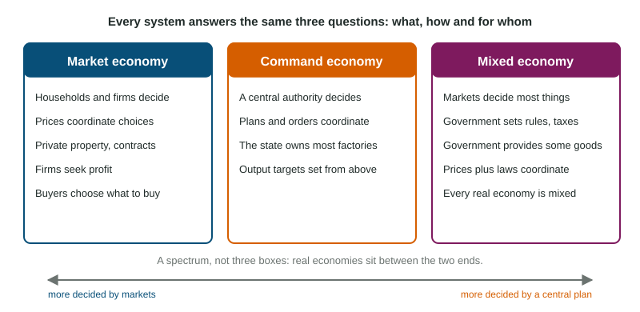

Resource Allocation and Economic Systems
Scarcity forces every society to decide what to produce, how and for whom.
Part 1 · Hook
Why this matters
Part 2 · Before you start
What this builds on
Part 3 · Prerequisite check
Quick check before you start
1. Scarcity means
- resources are limited while wants are unlimited
- a good is sold out for a week
- only poor countries must choose
- prices are too high
Show the answer
Limited resources, unlimited wants.
- Correct: resources are limited while wants are unlimited:
- a good is sold out for a week:
- only poor countries must choose:
- prices are too high:
2. A factory's machines are which factor of production?
- Capital
- Land
- Labor
- Entrepreneurship
Show the answer
Tools and machines are capital.
- Correct: Capital:
- Land:
- Labor:
- Entrepreneurship:
Part 4 · See it
See it first

Part 5 · Step by step
How it works, step by step
- Resources are scarceevery society must decide what to produce, how to produce it and for whom
- In a market economy, buyers want more of a goodits price rises
- The higher price raises what firms can earn from the goodfirms have an incentive to make more of it, using resources drawn from other uses
- Firms make more and buyers adjustresources move toward the goods people value most, without a central plan
Part 6 · Key ideas
Key ideas
- Every economic system answers three questions: what to produce, how to produce it, and for whom.
- In a market economy, households and firms decide, and prices coordinate their choices. In a command economy, a central authority decides, and plans and orders coordinate.
- A mixed economy combines markets with government rules, taxes and some government-provided goods. Every real economy is mixed, in different proportions.
- Markets rely on institutions: property rights (owners control and gain from what they own), enforceable contracts and the rule of law. These give people incentives to produce, save and trade.
Part 7 · Misconception
A common mistake
The wrong idea: In a market economy nobody coordinates production, so it is random what gets made.
What actually happens: Prices coordinate it. A rising price tells firms buyers want more and gives them an incentive to make more; a falling price tells them to make less. No one plans it, but it is not random.
Part 8 · Check yourself
Check yourself
Exam-style questions. Anything you miss goes into your review queue.
1. Which three questions must every economic system answer?
- Who votes, who governs, and who pays the taxes
- How much to save, borrow and lend
- What to produce, how to produce it, and for whom
- Which goods to import, export and tax
Show the answer
Scarcity means every society must decide what to make, how to make it and who gets it. Systems differ in who answers.
- Who votes, who governs, and who pays the taxes: Those are questions about government, not how resources are allocated.
- How much to save, borrow and lend: Saving and borrowing are choices inside a system, not its three questions.
- Correct: What to produce, how to produce it, and for whom: Right: what, how and for whom.
- Which goods to import, export and tax: Trade and taxes are policies, not the three basic questions.
Data
How three countries decide
| Country | Who owns most factories and farms | What sets most prices | Who decides what gets made |
|---|---|---|---|
| Arvel | private owners | buyers and sellers in markets | firms, guided by what buyers pay |
| Brennick | the state | a national planning board | the planning board |
| Coralia | mostly private owners; the state runs the railways | markets, with some government rules | mostly firms; the government provides schools and roads |
2. Which kind of economic system does Brennick have?
- A market economy
- A mixed economy that relies mostly on markets
- A system with no answer to "what to produce"
- A command economy
Show the answer
In Brennick the state owns the factories and farms and a planning board sets prices and decides what is made: a command economy.
- A market economy: In a market economy private owners and prices decide; Brennick uses a board.
- A mixed economy that relies mostly on markets: Brennick's board makes the main decisions, not markets.
- A system with no answer to "what to produce": Every system answers it; in Brennick the board does.
- Correct: A command economy: Right: central ownership and a central plan.
Scenario
Tessaly's winter coats
In the invented country of Tessaly, a central planning office decides how many coats the state-owned clothing factories make each year and sets the price of every coat. This year the office ordered 2 million summer jackets and 1 million winter coats. By December, stores have racks of unsold summer jackets, while winter coats are gone within days of each delivery and long lines form whenever a truck arrives. The price of a winter coat stays where the office set it.
3. What kind of economic system does the scenario describe for Tessaly's clothing?
- A command economy
- A market economy
- A mixed economy run by markets
- An economy without scarcity
Show the answer
A central office decides how much is made and sets prices in state-owned factories: a command system.
- Correct: A command economy: Right: central planning and state ownership.
- A market economy: In a market, prices and private firms would decide.
- A mixed economy run by markets: The planning office, not markets, decides here.
- An economy without scarcity: Coats run out within days, so scarcity is clearly present.
4. Why do winter coats run out while summer jackets pile up?
- Tessaly has no factories able to sew coats
- Buyers in Tessaly have no money
- The fixed price sends no signal to make more coats
- Coats are a factor of production
Show the answer
With prices set by the office, nothing rises to tell factories that coats are wanted, and no one gains by switching from jackets to coats.
- Tessaly has no factories able to sew coats: The factories already make 1 million coats, so they can sew them.
- Buyers in Tessaly have no money: Long lines show people are trying to buy.
- Correct: The fixed price sends no signal to make more coats: Right: a fixed price sends no signal.
- Coats are a factor of production: Coats are a finished good, not a resource used in production.
5. What are property rights?
- Rules that set the price of each good
- Legal rights to own, use and gain from property
- Government ownership of factories
- Rights to receive goods for free
Show the answer
Property rights say who owns something and let the owner use it, sell it and keep what it earns.
- Rules that set the price of each good: Price setting is a different policy.
- Correct: Legal rights to own, use and gain from property: Right: ownership and its rewards.
- Government ownership of factories: That describes state ownership, the opposite of private property.
- Rights to receive goods for free: Owning something is not a right to free goods.
Part 9 · Summary
Summary
Part 10 · Up next
What comes next
Part 11 · Connections